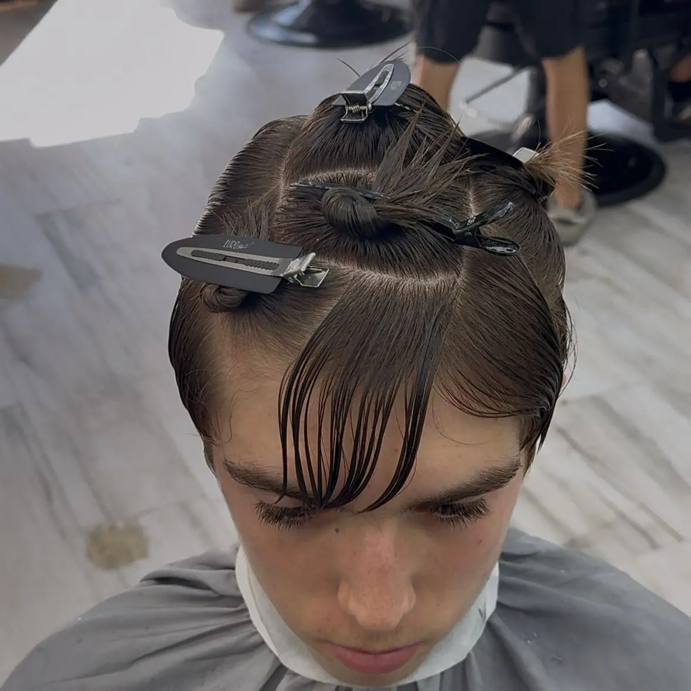
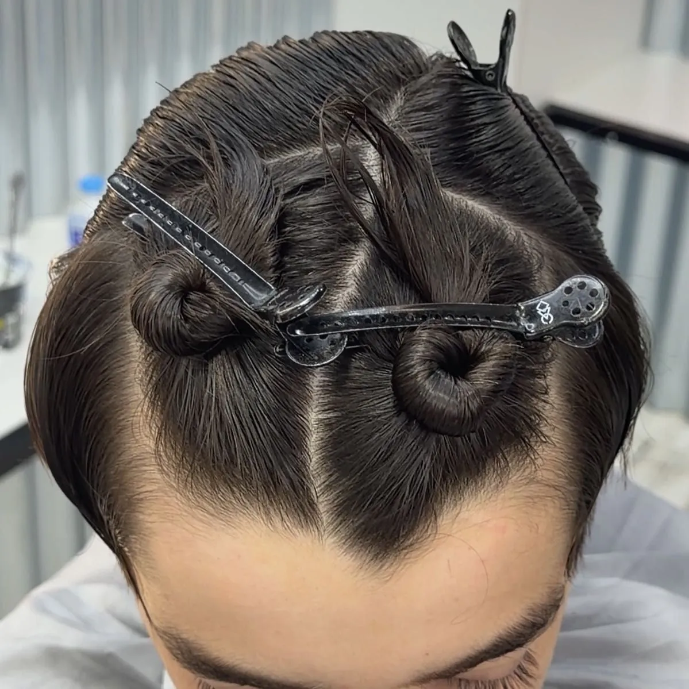
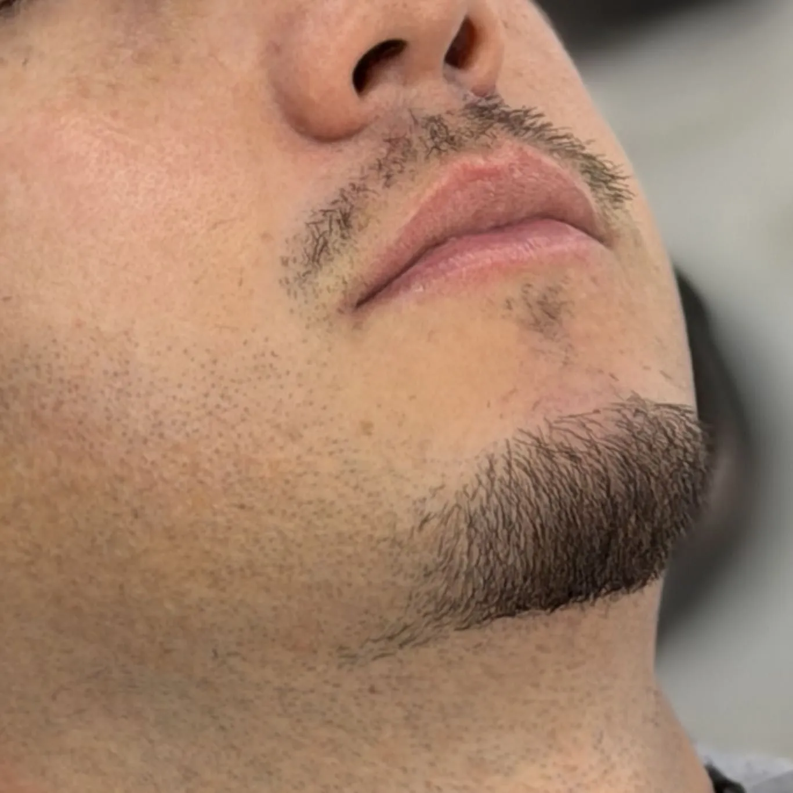
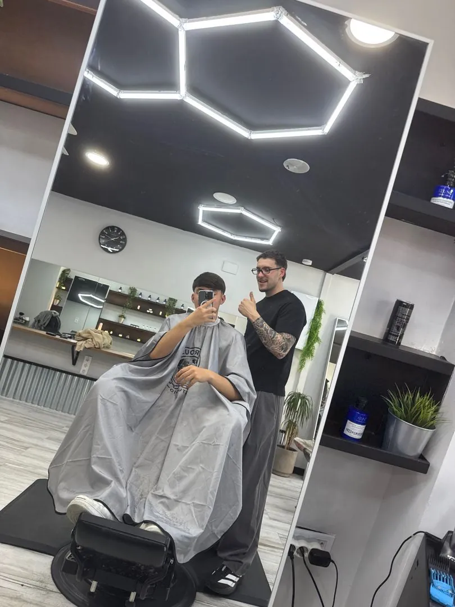
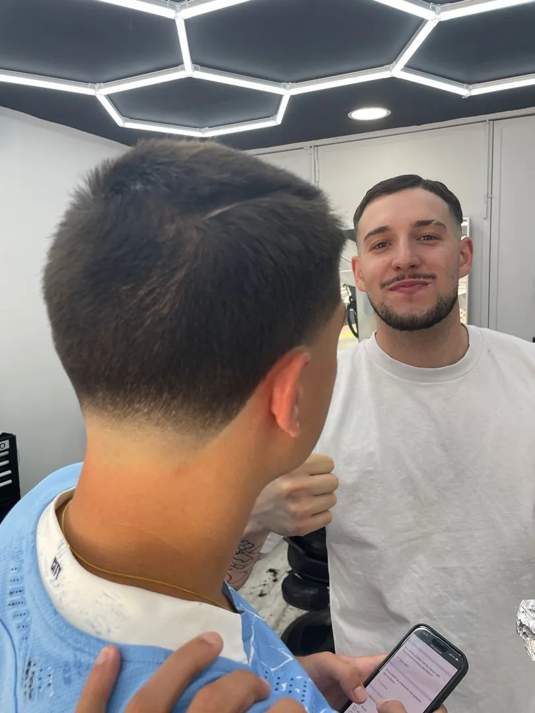

Fundador · Visagismo y estructura
Roberto Villegas
Detrás de LRS desde 2021. Su sello es el corte estudiado: lee el rostro, divide el pelo por planos y construye una forma que respeta lo natural de cada cabello.
Reservar con Roberto02 Concepto
Una manera de entender la peluquería desde la naturalidad y la precisión. Un concepto pensado para la creatividad, la excelencia y la libertad artística, donde no existen barreras a la hora de crear.
03 Trabajos
Fotos reales del sillón de LRS. Pulsa cualquiera para verla en grande.
04 Método
Antes de la primera pasada de máquina, se mira cómo crece tu pelo, cómo es tu cráneo y qué quieres transmitir. Por eso verás pinzas y particiones: así se identifican los cambios de plano y se controla cada milímetro.

Facciones, remolinos, densidad y textura. Lo que tu pelo hace solo, antes de tocarlo.

Se divide el cabello para detectar cada cambio de plano y trabajar con control y exactitud.
Transiciones limpias y una forma pensada para que crezca bien, no solo para el día de la foto.

Contornos, puntillismo en barba y peinado final para que sepas llevarlo en casa.
05 Visagismo
Elige la que más se parezca a la tuya y te contamos por dónde suele ir la estructura. Es una orientación: en el sillón se mira tu caso de verdad.
Servicio recomendado
Visagismo + asesoramiento completo
Estudio craneal, estructuración, styling, lavado según tu cuero cabelludo y bebida de cortesía · 1 h
06 Servicios
Pulsa en cualquier servicio para reservarlo directamente en Booksy, con tu hora y tu barbero.
Pago en efectivo · Precios tomados de Booksy, pueden variar · Hay política de cancelación: si no puedes venir, avisa con tiempo.
07 Equipo
Fundador · Visagismo y estructura
Detrás de LRS desde 2021. Su sello es el corte estudiado: lee el rostro, divide el pelo por planos y construye una forma que respeta lo natural de cada cabello.
Reservar con RobertoBarbero
Mismo método, misma exigencia en el detalle. Cortes y barba con el sello de la casa.
Reservar con Jesús08 Reseñas
4,9
De 638 reseñas verificadas en Booksy
«Asesoría técnica desde el primer minuto según tus facciones, y un nuevo estilo de corte que me ha dejado sin palabras.»
«Nos ha encantado el trato y el diseño, siempre respetando la naturalidad y característica de su pelo, pero con un toque moderno.»
«El mejor peluquero de toda Sevilla sin ningún tipo de duda. Y todavía mejor persona.»
09 El estudio


10 Visítanos
41940 Tomares, Sevilla · El Aljarafe
Consultando horario…
| Lunes | 15:20 – 21:20 |
|---|---|
| Martes | 11:00 – 14:00 · 15:20 – 20:40 |
| Miércoles | 10:40 – 14:00 · 15:20 – 20:40 |
| Jueves | 10:00 – 14:00 · 15:20 – 20:40 |
| Viernes | 10:00 – 14:00 · 15:20 – 20:40 |
| Sábado | 09:40 – 14:00 |
| Domingo | Cerrado |
37.3763° N · 6.0522° O
El mapa se carga desde Google Maps al pulsar.